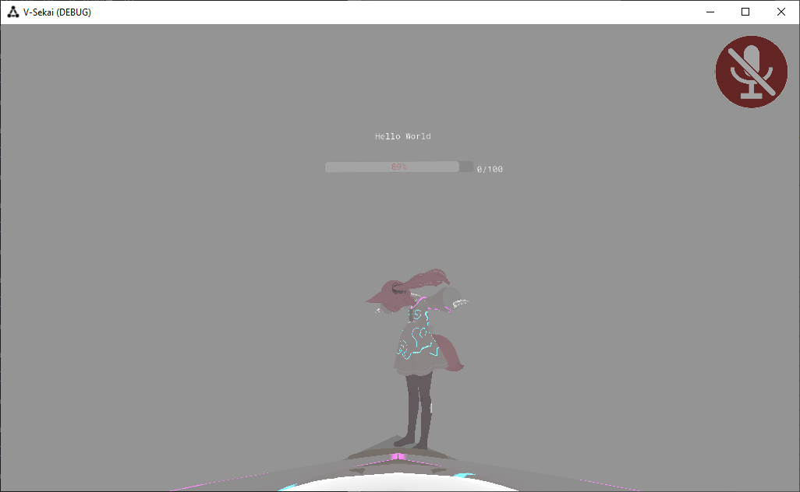

Changelog 2022-06
2022-06-24
- Updated this v-sekai.github.io website.
Previously on V-Sekai
- Had a meeting with Lyuma, Fire, Sarcen, Silent and MMMaellon about the V-Sekai project.
- Resolved apply style patches to 3d-audio.
- Make V-Sekai film tests with the new Godot Engine movie maker feature.
2022-06-05
- Fire collaborated on godot-snappy for object snapping https://github.com/jgillich/godot-snappy
- Try to integrate manifold again.
2022-06-03
https://gitlab.com/bramw/baserow/-/issues/998 Spent some documenting the baserow io system on Digital Ocean used to store in-progress art assets, data from research and 3d galleries.
Donated research on avatar generation to the MIT-licensed project at https://github.com/AtlasFoundation/OpenCharacterCreator As part of: lightweight-quality-avatars
2022-06-01
- Lyuma uncommented some code in vsk_avatar/ik_space.gd to create IK tracking points on the server, to enable IK sync via server. TL;DR (Other peers can see other peers while connected to a server.)

- Server sync issue removed from todo list.
| id | Name | Notes | Active |
|---|---|---|---|
| 24 | VR smooth locomotion. | True | |
| 24 | VR smooth locomotion with blackout. | True | |
| 5 | Grab an object. | True | |
| 17 | Support large uploads to the content distribution network. | True | |
| 19 | Make a video of entering the world and grabbing objects. | True |
- Trialing a fix for issue of SDFGI on VR. Was poor. Had to backout branch.